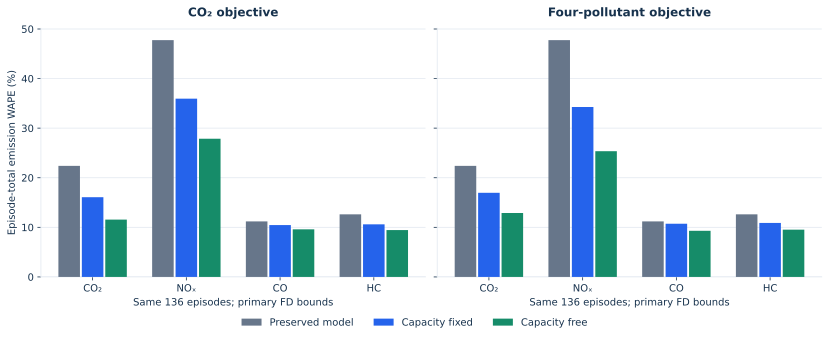
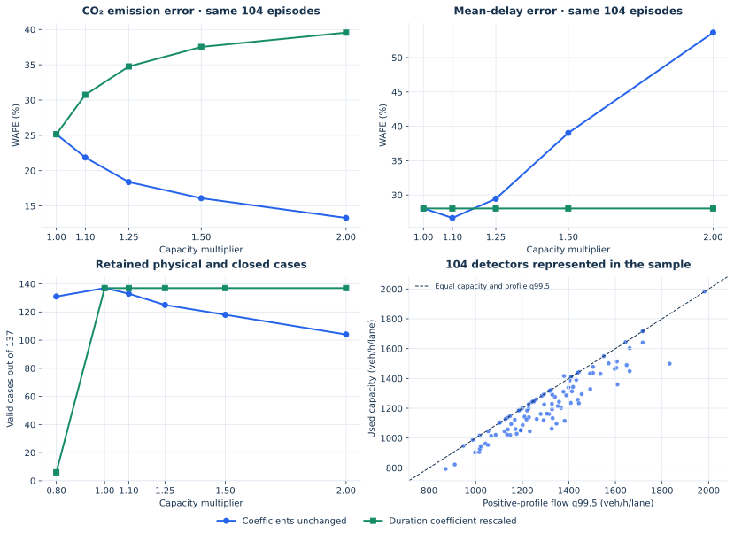

QVDF-E · exploratory diagnostics · preserved 137-episode sample
Yes, as a conditional fit to the same emission proxy. Allowing capacity to change improves the optimized two-speed emission comparison relative to strictly preserving capacity. The earlier bounded-FD analysis already allowed this change; its free-capacity objective is reproduced here, rather than presented as a new improvement.
Demand, free-flow speed, episode duration, delay and discharge μ = D/P remain fixed. Each episode uses one queue-state speed vq (mph) for all four pollutants. The strict case requires CFD = C; the free case lets CFD vary. Both search the same exploratory bounds: kj = 150–300 veh/mi/lane and positive backward-wave magnitude ω = 5–20 mph.
The CO₂ objective minimizes absolute relative CO₂ error. The four-pollutant objective minimizes the mean of the four squared relative errors, with equal pollutant weights. These are conditional fits to the same observations, not out-of-sample predictions. The reported WAPE is calculated from each episode’s total emission, then pooled across episodes.
On the same 136 feasible episodes, the CO₂ objective reduces CO₂ WAPE from 22.39% in the preserved model to 16.07% with fixed capacity and 11.55% with free capacity. The four-pollutant objective gives CO₂ WAPE of 16.96% and 12.89%, respectively.
The primary fixed-capacity case is feasible for 136 of 137 episodes; the free case is feasible for all 137. Episode ep101 (D12 I-5 S, L5S-264; C = 792.87 veh/h/lane) has no admissible fixed-capacity pair within the primary bounds. Expanding the lower wave-speed bound to 3 mph makes both cases feasible for all 137. All failures and both bounds are retained in the CSVs.

In a separate calculation, replace C by C′ while holding free-flow speed, jam density kj = 220, the selected episodes and fitted coefficients fixed. Capacity multipliers are 0.8, 1, 1.1, 1.25, 1.5 and 2; released metadata capacity is another scenario where available. The entire calculation is propagated:
The triangular FD is then recomputed:
New two-state times and lookup rates produce the new emission totals. Every row retains domain, finite-link and nonnegative-arrival checks. An invalid result is left undefined and counted; it is never replaced by zero.
An apparent emission gain can come with worse traffic predictions. On the same 104 episodes valid for every capacity increase, doubling C with unchanged coefficients lowers CO₂ WAPE from 25.16% to 13.31%, but raises mean-delay WAPE from 28.05% to 53.64% and duration WAPE from 6.13% to 48.92%. It also makes 33 of the original 137 cases fail finite-link geometry. This is not evidence that doubling capacity is a better calibrated model.
A uniform capacity change can be absorbed by the duration power-law coefficient:
On the power branch this preserves P, peak delay, mean delay and μ exactly, while the FD queue speed still changes. Across the same 104 episodes, doubling capacity under this control raises CO₂ WAPE to 39.56%, with unchanged traffic errors. All 137 cases remain valid for capacity increases in this control. It is an algebraic reparameterization, not a full recalibration. Detector-specific metadata ratios require different rescaling within a fitting group; those rows are labelled as individual algebraic controls, not a valid common parameter card.
| Calculation | C multiplier | Valid cases | CO₂ WAPE | Duration WAPE | Mean-delay WAPE |
|---|---|---|---|---|---|
| Coefficients unchanged | 1× | 137/137 | 25.16% | 6.13% | 28.05% |
| Coefficients unchanged | 1.1× | 133/137 | 21.87% | 8.75% | 26.66% |
| Coefficients unchanged | 1.25× | 125/137 | 18.39% | 19.14% | 29.46% |
| Coefficients unchanged | 1.5× | 118/137 | 16.10% | 32.35% | 39.03% |
| Coefficients unchanged | 2× | 104/137 | 13.31% | 48.92% | 53.64% |
| Duration coefficient rescaled | 1× | 137/137 | 25.16% | 6.13% | 28.05% |
| Duration coefficient rescaled | 1.1× | 137/137 | 30.75% | 6.13% | 28.05% |
| Duration coefficient rescaled | 1.25× | 137/137 | 34.76% | 6.13% | 28.05% |
| Duration coefficient rescaled | 1.5× | 137/137 | 37.53% | 6.13% | 28.05% |
| Duration coefficient rescaled | 2× | 137/137 | 39.56% | 6.13% | 28.05% |

The 137 episodes represent 104 detectors. Their median used capacity is 1,219.42 veh/h/lane; the median ratio to the detector’s positive-profile flow q99.5 is 0.947. A median 8.16% of valid profile flow readings exceeds the fitted capacity. Seventy-four of these detectors use accepted S3 fits; the others use the preserved fallback. These diagnostics justify checking the FD fit and its observation support.
Released metadata is available for 100 of these detectors and gives 2,000 veh/h/lane for every one. The median fitted-to-metadata ratio is 0.610. Because this metadata comparator is constant across detectors, it should not be treated as an independently estimated capacity for each site. Arizona metadata capacity is unavailable. The profile q99.5 is also descriptive, not an independent capacity measurement.
The broader inventory contains 352 detectors, including 248 outside the retained emission sample. Twenty-three capacities exceed the inherited 500–3,500 acceptance range; the largest is 7,857 veh/h/lane. Those 23 have one or two declared lanes and are absent from the retained 137 episodes. Their lane/count mapping, units, fallback and fit support warrant a source audit as well. A low-capacity-only correction would miss these anomalies.
The current evidence supports a focused FD/source audit before a full rerun. It does not establish that every low fitted capacity is wrong, nor that raising capacity will improve a recalibrated model. Emission fitting identifies a queue speed; many jam-density/wave-speed pairs produce that speed, so these data alone do not identify a unique physical FD.
No production calibration, observed input, episode selection or published result table was changed. Editable function-based SVG figures and their generators accompany this report.